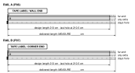
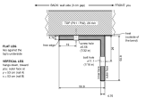
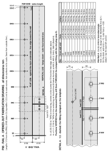
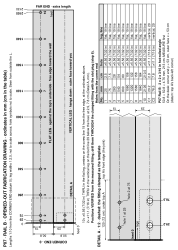
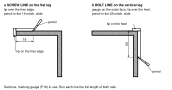
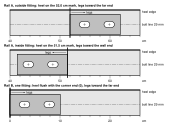
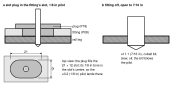
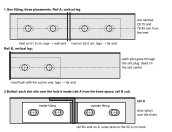
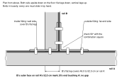

All steel work happens on the bench, before either rail goes near a top. Under the desk you only drive screws and bolts; you never drill steel there. Two identical lengths of 2 × 2 × 3/16 in hot-rolled angle arrive; either can be rail A. Tape readings in cm, caliper and drill sizes in mm.

| You need | For |
|---|---|
| P06 rail A, P07 rail B; one P08 fitting as the template | the work pieces |
| P18 printed tools: edge T-square, rail marking gauge, rail drill jig (PETG), 2 fitting slot plugs | stations, the 19 and 29 lines, pilots, bolt-hole transfer |
| Bits 1/8, 7/32 and 7/16 in (the 7/16 cobalt), cutting oil, flat file, 2 clamps, tape, combination square, pencil | drilling and deburring; a drill press if you have one |
| Acetone or mineral spirits, 120 grit, flat black enamel | finish (step 9) |

| Item | mm | What it means | Confidence |
|---|---|---|---|
| Section | 50.8 × 50.8 × 4.76 | 2 × 2 × 3/16 in hot-rolled angle | SOURCE-DEFINED MEASURE ON HARDWARE thickness |
| Flat leg | lies against the top's underside; its free edge points to the wall | SOURCE-DEFINED | |
| Vertical leg | hangs down on the side nearer you; outer face y = 53 cm (A), x = 53 cm (B) | SOURCE-DEFINED | |
| Screw line | 19 | from the flat leg's free edge; centres of the ⌀5.56 (7/32 in) screw holes | SOURCE-DEFINED |
| Bolt line | 29 | below the heel (the top's underside); centres of the ⌀11.1 (7/16 in) bolt holes | SOURCE-DEFINED |
| Fitting slots | 21 × 12 | two per P08 leg, centres 29.15 and 78.45 from the heel; legs 100.5 × 41, 5 thick (all mm) | VERIFIED 23 Oct 2026 |
The two fabrication drawings that follow are full pages, turned sideways: turn the booklet a quarter turn clockwise to read them. Every hole is given from the labelled end, never from the hole before: the drawings carry mm ordinates, the hole table beside each drawing gives the same stations in cm for the tape.


Mark the stations. Hook the tape over the labelled end and tick every station on the flat leg from that one hook: rail A 3.5, 28, 54, 80, 106, 132, 158, 184, 210.5 cm; rail B 2.5, 7.5, 28, 54, 80, 106, 132, 158, 184, 210.5 cm. Square each tick across the leg along the T-square's blade, its lip hooked over the heel edge.
Heel marks. On rail A, turn the vertical leg's outer face up and scribe (do not pencil) the heel positions at 51.5 cm and 52.0 cm from the wall end, squared across the leg. On rail B scribe a 0 on the vertical leg's outer face at the corner end. Scribed lines survive the paint; pencil does not.

| Clamp the fitting | Heel on | Legs toward | Holes it makes (cm from the labelled end) |
|---|---|---|---|
| Rail A, outside fitting | the 52.0 cm mark | the far end | O1 54.9, O2 59.8 |
| Rail A, inside fitting | the 51.5 cm mark | the wall end | I1 48.6, I2 43.7 |
| Rail B, one fitting (both share the holes) | the corner end itself (0) | the far end | C1 2.9, C2 7.8 |
Heel stations SOURCE-DEFINED; hole positions from the measured slot centres VERIFIED. Both fittings are identical, so holes copied from one fit the other.




Finish. Take the fittings off. Degrease both rails, scuff with 120 grit, two coats of flat black enamel, 24 h to cure. The holes need no masking.
Re-mark after painting. Put a strip of tape on rail A's vertical leg over the scribed 52.0 cm line and mark the line and 52.0 on it. Tape and re-label both reference ends again: RAIL A · WALL END, RAIL B · CORNER END. Chapter H checks rail B's outer face against this 52.0 cm mark.
Next: chapter F (legs, feet and the rails go onto the tops).